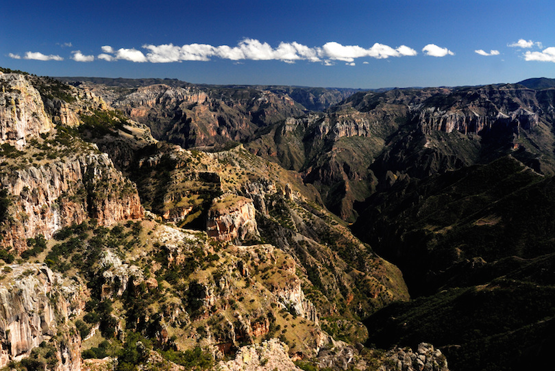

The Copper Canyon is in fact a network of canyons which together are several times larger than the Grand Canyon. The most popular way to explore the Copper Canyon is on the Chihuahua al Pacifico Railway. The track passes over 37 bridges and through 86 tunnels, rising as high as 2,400 meter (7,900 feet) above sea level featuring spectacular views of the canyons below.